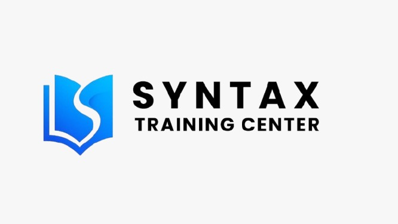

Panduan Teknis Web Developer
Buku panduan terpadu bagi peserta pelatihan Web Developer. Memuat rangkuman materi esensial, arsitektur sistem, sintaks teknis, contoh kode testing otomatis, serta pemetaan standar kompetensi kerja nasional industri perangkat lunak.

Database dengan SQL
Database adalah tempat penyimpanan seluruh aset informasi aplikasi secara terstruktur. Berikut konsep inti dan skenario nyata penerapannya yang wajib dipahami seorang web developer:
1. Relasi Data: Primary Key & Foreign Key (Menghubungkan Dua Lemari Data)
Integritas RelasiApa Masalahnya? Mengapa kita tidak menaruh nama pelanggan, nomor WhatsApp, dan alamat rumah berulang-ulang di setiap baris riwayat belanjaan? Karena jika pelanggan belanja 20 kali lalu pindah rumah, admin harus mengedit 20 baris satu per satu. Jika satu saja terlewat, pengiriman barang berikutnya akan salah alamat.
Contoh Nyata: Kita pisahkan menjadi 2 tabel:
• Tabel users memiliki kolom id unik (KTP Digital Pelanggan = Primary Key).
• Tabel orders cukup mencatat user_id (Nomor KTP pemilik belanjaan = Foreign Key).
Kapan pun pelanggan mengubah alamatnya, data otomatis konsisten untuk semua riwayat pesanannya.
Cukup definisikan di Model User:
return $this->hasMany(Order::class);. Laravel otomatis menghubungkan data pelanggan dan pesanannya tanpa Anda harus menulis query relasi yang rumit secara manual.
2. Transaksi TCL (COMMIT & ROLLBACK — Mengamankan Uang & Stok)
Anti-Data KorupApa Masalahnya? Operasi bisnis seperti transfer saldo atau checkout terdiri dari beberapa tahap: potong saldo pembeli, tambahkan saldo penjual, dan kurangi stok barang. Jika tiba-tiba koneksi database terputus di langkah kedua, uang pembeli bisa lenyap tapi barang tidak terkirim!
Contoh Nyata: Budi mentransfer Rp 500.000 ke rekening Toko. Langkah 1 (potong saldo Budi) sukses. Saat melangkah ke Langkah 2, server listrik mati. Jika tanpa transaksi (TCL), saldo Budi hilang begitu saja. Dengan TCL, sistem memastikan: "Semua langkah harus berhasil bersamaan (COMMIT), atau jika ada 1 error maka semua perubahan dibatalkan seketika kembali ke awal (ROLLBACK)!".
Gunakan pembungkus otomatis:
DB::transaction(function () use ($budi, $toko) { $budi->decrement('saldo', 500000); $toko->increment('saldo', 500000); });. Jika terjadi gangguan di tengah jalan, saldo Budi aman dan tidak akan berkurang sepeser pun.
3. Analisis Data Bisnis: JOIN & GROUP BY (Laporan Otomatis)
Kueri CepatApa Masalahnya? Pemilik bisnis meminta laporan: "Tolong tampilkan daftar pelanggan yang sudah belanja lebih dari 3 kali bulan ini agar bisa kita beri voucher loyalitas!". Anda tidak perlu mengekspor ribuan data ke Excel dan menghitungnya satu per satu.
Solusi SQL: Gabungkan tabel pengguna dan pesanan dengan LEFT JOIN, kelompokkan pesanan per nama dengan GROUP BY, lalu filter hanya yang jumlahnya lebih dari 3 dengan perintah HAVING:
SELECT u.nama, COUNT(o.id) AS total_order
FROM users u
LEFT JOIN orders o ON u.id = o.user_id
GROUP BY u.nama
HAVING total_order > 3;Rangkuman Alur Kerja Database di Industri
Siklus DataTentukan tabel, relasi Primary-Foreign Key, dan tipe data agar tidak ada data dobel.
Jalankan CRUD (tambah, lihat, ubah, hapus) melalui query atau ORM Eloquent yang aman.
Gunakan transaksi agar data keuangan tidak korup, serta JOIN untuk laporan bisnis.
Framework & Library
Framework dan library adalah fondasi pengembangan web modern agar tim dapat membangun aplikasi berstandar industri dengan cepat, aman, dan mudah dirawat:
1. Mengapa Butuh Framework? (PHP Native vs Laravel)
Efisiensi & KeamananApa Masalahnya? Jika membangun web dari nol menggunakan PHP murni (native), developer harus membuat sendiri mekanisme pengacak password, penyaring serangan hacker, rute URL, session login, dan koneksi database. Hal ini memakan waktu berbulan-bulan dan rawan bocor jika ada celah yang terlewat.
Contoh Nyata: Menggunakan Laravel seperti membeli mobil baru yang sudah dilengkapi mesin bersertifikat, rem ABS, dan kantong udara (airbag). Anda tinggal mengemudikannya dan langsung fokus membuat fitur bisnis utama (katalog produk, diskon kupon, dan pembayaran) tanpa perlu merakit roda atau baut sendiri.
Formulir Laravel otomatis terlindungi dari pembajakan dengan token
@csrf, input query terlindungi dari SQL Injection via Eloquent ORM, dan output Blade otomatis dibersihkan dari skrip jahat XSS.
2. Arsitektur MVC (Model - View - Controller) Seperti Rumah Makan
Pemisahan TugasApa Masalahnya? Jika kode tampilan HTML, logika hitung harga, dan query database dicampur aduk dalam 1 file setebal 2.000 baris, tim developer akan kesulitan bekerja bersama dan mencari satu error kecil bisa memakan waktu seharian.
Contoh Nyata (Analogi 3 Petugas):
• Model (Gudang Data & Koki): Mengambil dan menyimpan data ke lemari database (tabel products).
• Controller (Pelayan Restoran): Menerima permintaan pembeli, meminta Model mengambil barang yang tepat, lalu mengirimkannya ke View.
• View (Etalase / Meja Saji): Tampilan antarmuka indah yang dilihat pembeli di layar HP atau monitor laptop (Blade HTML/CSS).
// 1. Route menerima request: GET /produk/15
// 2. Controller memanggil Model dan mengoper ke View:
public function show($id)
{
$produk = Product::findOrFail($id); // Model mengambil data
return view('produk.detail', compact('produk')); // View menampilkan
}Alur Kerja Request Pengguna di Framework Modern
Siklus HTTP RequestMemeriksa apakah pengunjung berhak masuk (login) dan mengarahkan ke fungsi yang tepat.
Menjalankan logika bisnis, menghitung diskon/ongkir, dan mengambil data dari database.
Menyajikan halaman HTML indah untuk browser atau respons JSON untuk aplikasi mobile.
Testing & User Acceptance Testing (UAT)
User Acceptance Testing (UAT) adalah tahap akhir pengujian fungsionalitas sistem oleh pengguna akhir (user/client) sebelum aplikasi dirilis ke lingkungan production.
• Staging Environment: Pengujian dijalankan di lingkungan replika yang mirip production.
Siklus formal pengujian UAT dimulai dari persiapan dokumen hingga persetujuan perilisan aplikasi:
- UAT Test Plan: Menyusun skenario pengujian.
- Eksekusi Tes: Pengguna menjalankan skenario di platform.
- Log Isu: Pencatatan bug ke sistem (seperti Jira).
- UAT Sign-Off: Persetujuan tertulis bahwa aplikasi siap live.
• Aksi Pengguna: Menambahkan produk ke keranjang belanja → Klik tombol bayar → Masukkan PIN pembayaran → Verifikasi notifikasi email.
• Hasil Diharapkan: Saldo e-wallet berkurang sesuai nominal, status transaksi berubah menjadi "Dibayar", dan stok produk di gudang terpotong otomatis.
Contoh Sederhana: Menguji Form Pelanggan
Tes Positif & NegatifIsi nama dan email baru. Sistem harus menyimpan data lalu kembali ke daftar pelanggan.
Kosongkan email atau gunakan email yang sudah terdaftar. Sistem harus menolak dan menampilkan pesan validasi.
Agar perubahan kode berikutnya tidak diam-diam merusak proses tambah pelanggan yang sebelumnya sudah benar.
Contoh Implementasi Testing Otomatis di Laravel (Feature Test)
Sebelum UAT manual diserahkan ke klien, developer menulis automated test untuk memastikan fitur CRUD dan validasi tidak pernah rusak saat ada perubahan kode.
php artisan make:test CustomerTest
<?php
namespace Tests\Feature;
use Tests\TestCase;
use App\Models\Customer;
use Illuminate\Foundation\Testing\RefreshDatabase;
class CustomerTest extends TestCase
{
use RefreshDatabase; // Reset database otomatis setiap kali test dijalankan
/** @test: Memverifikasi halaman daftar pelanggan dapat dimuat sukses */
public function test_halaman_pelanggan_bisa_diakses(): void
{
$response = $this->get('/customers');
$response->assertStatus(200); // HTTP 200 OK
$response->assertSee('Data Pelanggan');
}
/** @test: Memverifikasi proses penambahan pelanggan baru dan tersimpan di database */
public function test_bisa_menambah_pelanggan_baru(): void
{
$data = [
'name' => 'Budi Santoso',
'email' => 'budi@example.com'
];
$response = $this->post('/customers', $data);
// Pastikan redirect sukses ke halaman index dan data ada di database
$response->assertRedirect('/customers');
$this->assertDatabaseHas('customers', [
'email' => 'budi@example.com'
]);
}
/** @test: Memverifikasi penolakan jika email sudah terdaftar (Anti-Duplikat) */
public function test_email_duplikat_ditolak_validasi(): void
{
Customer::create(['name' => 'Pelanggan Lama', 'email' => 'sama@example.com']);
$response = $this->post('/customers', [
'name' => 'Pelanggan Baru',
'email' => 'sama@example.com'
]);
// Validasi harus menolak dan mencatat error pada kolom email
$response->assertSessionHasErrors('email');
}
}php artisan test --filter=CustomerTestJika semua berwarna hijau (PASS), artinya seluruh logika dan keamanan database terbukti aman tanpa cacat sebelum aplikasi diserahkan untuk pengujian UAT oleh pengguna.
Monitoring & Observabilitas
Monitoring dan observabilitas adalah mata dan telinga developer untuk memastikan sistem tetap hidup, sehat, dan cepat di server produksi:
1. Kotak Hitam Aplikasi: Membaca Log Error (laravel.log)
Investigasi Bug
Apa Masalahnya? Pengguna melapor: "Min, tadi saya mau checkout belanjaan tiba-tiba muncul layar putih error 500!". Jika developer tidak memiliki rekaman catatan kejadian (log), developer hanya bisa meraba-raba dan menebak penyebabnya tanpa kepastian.
Contoh Nyata: Saat membuka file storage/logs/laravel.log, sistem mencatat waktu dan lokasi kode secara presisi:
[14:22:05] ERROR: Call to member function pay() on null in OrderController.php:48
Developer langsung mengetahui dalam hitungan detik bahwa pembeli belum memilih metode pembayaran sebelum menekan tombol bayar!
Gunakan
Log::error('Gagal transaksi', ['user_id' => $user->id, 'error' => $e->getMessage()]); dan aktifkan Laravel Telescope di tahap staging untuk menginspeksi query database lambat, request masuk, dan status queue tanpa menebak.
2. Alert Otomatis ke Telegram / Slack (Peringatan Dini Sebelum Krisis)
Pencegahan DowntimeApa Masalahnya? Kapasitas RAM server tiba-tiba habis atau hard disk penuh di jam 2 dini hari saat semua orang sedang tidur lelap. Jika tidak ada sistem pemantau, toko online akan mati sepanjang malam hingga pagi hari.
Contoh Nyata: Bot pengawas server mendeteksi penggunaan RAM mencapai 92%. Bot secara otomatis menembakkan notifikasi webhook ke grup WhatsApp atau Telegram tim IT:
"⚠️ ALERT: CPU Server 94% selama 5 menit berturut-turut! Lonjakan transaksi terdeteksi."
Tim developer langsung bisa menambah kapasitas server atau membersihkan cache sebelum server benar-benar tumbang.
Gunakan UptimeRobot (notifikasi web mati gratis), Sentry / Bugsnag (pelacak error aplikasi otomatis ke Slack), dan Laravel Horizon untuk memantau kelancaran antrean background job.
Contoh Kasus Nyata: Mengatasi Halaman Checkout yang Tiba-Tiba Lambat
Cari Penyebab Berdasarkan MetrikWaktu respon checkout melonjak dari 0.3 detik menjadi 9 detik dan beberapa transaksi gagal (HTTP 504 Gateway Timeout).
Buka Telescope dan temukan ada query SQL laporan penjualan berat yang tidak sengaja terpanggil di halaman kasir.
Pindahkan pembuatan laporan ke background queue, respon checkout kembali kilat 0.2 detik, dan CPU kembali normal.
Keamanan Aplikasi Web
Keamanan aplikasi dapat dipahami dari kejadian yang dekat dengan pengguna. Berikut empat ancaman yang sering muncul di dunia nyata, dilengkapi contoh serangan dan cara menerapkan perlindungan yang tersedia di Laravel:
1. SQL Injection (Penyusupan Perintah Database Palsu)
Ancaman Data BocorApa Masalahnya? Celah ini terjadi saat formulir website menerima ketikan apa saja dari pengguna dan langsung menggabungkannya ke dalam perintah database tanpa diperiksa.
Contoh Nyata: Bayangkan di kolom pencarian atau login, hacker tidak mengetik nama melainkan mengetik tanda petik dan perintah jahat seperti: ' OR 1=1 --. Database yang tidak terlindungi akan terkecoh dan menganggap perintah itu benar, sehingga hacker bisa login tanpa password atau menghapus seluruh tabel!
Gunakan Eloquent, Query Builder, atau PDO dengan parameter binding. Input pengguna akan dikirim sebagai nilai data, bukan ditempel langsung menjadi perintah SQL. Hindari membuat raw query dengan menggabungkan string dari input pengguna.
2. Cross-Site Scripting / XSS (Penyisipan Kode Jahat di Layar Korban)
Pembajakan AkunApa Masalahnya? Hacker menuliskan skrip JavaScript jahat ke dalam kolom komentar atau review produk. Saat pengunjung lain membuka halaman itu, skrip tersebut berjalan otomatis di browser mereka tanpa disadari.
Contoh Nyata: Hacker menulis komentar: <script>curiCookieLogin()</script>. Jika website menampilkan komentar tanpa dibersihkan, browser pembaca lain akan mengeksekusi skrip tersebut dan token login mereka terkirim ke server hacker!
Tampilkan data dengan kurung kurawal ganda
{{ $komentar }} agar Blade melakukan escaping. Kode berbahaya akan tampil sebagai teks, bukan dijalankan oleh browser. Hindari sintaks output mentah {!! $data !!} untuk data yang berasal dari pengguna.
3. Broken Authentication (Celah Verifikasi Login & Sesi Bocor)
Kelemahan LoginApa Masalahnya? Sistem keamanan pintu masuk (login) yang lemah, misalnya mengizinkan pengguna mencoba tebak kata sandi tanpa batas atau menyimpan kata sandi dalam bentuk teks biasa di database.
Contoh Nyata: Hacker menggunakan robot komputer untuk menebak password jutaan kali dalam 5 menit (Brute Force), atau jika database bocor, password yang tersimpan terbaca jelas karena tidak diacak (*plain text*).
Simpan password dengan hashing Bcrypt / Argon2, batasi percobaan login menggunakan Rate Limiter, dan lakukan regenerasi sesi setelah login. Contohnya, setelah lima percobaan gagal, pengguna harus menunggu sebelum mencoba kembali.
4. Insecure Direct Object References / IDOR (Intip Data Lewat Ganti Angka URL)
Bocor PrivasiApa Masalahnya? Sistem menampilkan data penting hanya berdasarkan nomor ID di link URL, tanpa memeriksa apakah pengguna yang sedang login benar-benar pemilik data tersebut.
Contoh Nyata: Anda membuka tagihan invoice Anda di alamat link https://toko.com/invoice/101. Lalu Anda iseng mengganti angka di URL menjadi https://toko.com/invoice/102. Jika sistem memiliki celah IDOR, Anda langsung bisa melihat tagihan dan nama pelanggan lain!
Buat Policy atau Gate, lalu periksa izin sebelum mengirim data:
$user->can('view', $invoice). Jika invoice bukan milik pengguna tersebut, aplikasi harus menghentikan proses dengan respons 403 Forbidden. Pemeriksaan ini wajib diterapkan oleh developer pada setiap endpoint terkait.
Migrasi, Pembaruan & Cutover
Memperbarui aplikasi di server produksi membutuhkan kehati-hatian tinggi agar data pengguna tetap utuh dan layanan tidak mati berjam-jam:
1. Migrasi Database & Backup (Jaring Pengaman Sebelum Bencana)
Perlindungan DataApa Masalahnya? Saat merilis fitur baru, struktur tabel database seringkali harus ditambah atau diubah. Jika proses migrasi macet di tengah jalan karena script SQL error atau mati lampu, database bisa korup dan aplikasi lumpuh total!
Contoh Nyata: Sebuah toko memiliki 50.000 riwayat transaksi. Sebelum developer mengetik perintah pembaruan, mereka wajib membuat file cadangan otomatis (mysqldump atau snapshot cloud). Jika terjadi kegagalan sistem, database dapat dipulihkan kembali ke kondisi 5 menit sebelumnya tanpa ada satu pun transaksi yang lenyap.
Selalu tulis fungsi pembalik di migration file: metode
up() untuk menambah kolom dan down() untuk menghapusnya. Jika update gagal, Anda cukup mengeksekusi php artisan migrate:rollback untuk membatalkan perubahan secara otomatis.
2. Cutover Aplikasi: Blue-Green Deployment (Pindah Rel Tanpa Bikin Web Mati)
Zero-DowntimeApa Masalahnya? Bagaimana cara mengganti sistem versi lama ke versi baru saat ribuan pembeli sedang aktif bertransaksi tanpa harus menampilkan layar menyebalkan: "Website Sedang Ditutup untuk Pemeliharaan"?
Contoh Nyata (Analogi Dua Jalur Kereta):
• Server Biru (Versi Lama): Tetap aktif melayani seluruh pembeli tanpa gangguan.
• Server Hijau (Versi Baru): Dinyalakan di sebelahnya, diisi kode terbaru, dan diuji secara internal sampai 100% aman.
Saat siap, saklar traffic internet diputar ke Server Hijau dalam tempo 1 detik. Pengguna tidak merasakan jeda sedikit pun! Jika mendadak ada bug kritis, saklar bisa diputar balik ke Server Biru seketika (Instant Rollback).
Gunakan Nginx reverse proxy atau Load Balancer untuk mengalihkan traffic, atau manfaatkan fitur
php artisan down --secret="tim-dev-123" agar tim internal tetap bisa menguji web di server live sebelum dibuka untuk publik.
Panduan Langkah Aman Rilis Aplikasi (Checklist Cutover)
Standard Operating ProcedureBackup penuh database dan file upload. Uji script migrasi di server replika (staging).
Jalankan migrasi, perbarui dependensi composer/npm, dan bersihkan cache aplikasi.
Uji coba alur login dan transaksi nyata dalam 5 menit pertama untuk memastikan sistem stabil.
Manajemen Proyek Perangkat Lunak
Keberhasilan proyek perangkat lunak bukan hanya soal kepiawaian koding, melainkan ketepatan mengelola ruang lingkup, waktu, dan ekspektasi klien:
1. Menjinakkan "Scope Creep" (Fitur Tambahan Siluman Tanpa Batas)
Manajemen EkspektasiApa Masalahnya? Di awal kesepakatan, klien meminta website reservasi sederhana dengan waktu 3 minggu dan biaya Rp 7 juta. Di minggu kedua, klien tiba-tiba meminta: "Tolong tambahin fitur konsultasi video langsung, rekam medis digital, dan aplikasi Android ya, kan masih satu paket?". Jika developer mengiyakan semuanya tanpa batas, proyek akan molor berbulan-bulan dan developer rugi tenaga!
Contoh Nyata: Developer profesional mengatasinya dengan Project Charter & Scope of Work (SOW) yang ditandatangani di awal. Saat klien meminta fitur di luar daftar, developer menjawab dengan santun:
"Ide fitur video konsultasi ini sangat bagus! Mari kita fokus selesaikan fitur inti reservasi Fase 1 sesuai jadwal, lalu fitur video ini kita catat sebagai Change Request Fase 2 dengan anggaran dan waktu baru."
Tentukan batasan jelas apa yang termasuk (in-scope) dan apa yang tidak termasuk (out-of-scope) secara hitam di atas putih sebelum menulis baris kode pertama.
2. Koordinasi Tim: Metodologi Agile & Papan Kanban (Jira / Trello)
Alur Kerja TerbukaApa Masalahnya? Tim beranggotakan beberapa developer bekerja tanpa koordinasi terpusat. Terjadi tumpang tindih pengerjaan tugas, manajer bingung progres sebenarnya, dan bug kritis terabaikan hingga H-1 peluncuran.
Contoh Nyata: Gunakan papan tugas visual dengan kolom yang jelas:
• To Do: Daftar tugas yang harus dikerjakan minggu ini.
• In Progress: Tugas yang sedang aktif diketik oleh developer (maksimal 2 tugas per orang agar fokus).
• Code Review / Testing: Tugas yang sedang diperiksa oleh rekan developer dan tim QA.
• Done: Fitur yang sudah lolos uji di server staging dan disetujui klien.
Lakukan pertemuan singkat 10 menit setiap pagi (Daily Standup) untuk menjawab 3 hal: apa yang selesai kemarin, apa fokus hari ini, dan kendala teknis apa yang butuh bantuan.
Studi Kasus Proyek Nyata: Website Reservasi 4 Minggu
Rencana TerukurFormulir jadwal booking, data pasien, notifikasi WhatsApp otomatis, dan dashboard admin klinik.
Fitur pembayaran kartu kredit dan rekam medis elektronik dicatat untuk pengembangan berikutnya.
Aplikasi rilis tepat waktu dalam 4 minggu, bebas bug kritis, dan klien puas menandatangani BAST.
Tools Produktivitas & Kolaborasi
Lingkungan pengembangan terintegrasi.
Pelacakan histori kode & kolaborasi tim.
Manajemen penugasan metodologi Agile.
Framework otomatisasi pengujian kode.
Tools produktivitas yang tepat melipatgandakan kecepatan kerja dan menyelamatkan developer dari bencana kehilangan kode:
1. Git Version Control (Mesin Waktu & Penyelamat Tim Developer)
Kolaborasi Aman
Apa Masalahnya? Tanpa Git, pemula sering menyimpan folder dengan nama berantakan: skrip_v1.php, skrip_revisi.php, skrip_fix_beneran_final.php. Saat kode mendadak rusak setelah diedit, mereka kebingungan memutar balik karena tidak tahu baris mana yang salah ketik.
Contoh Nyata: Andi dan Budi mengedit file yang sama secara bersamaan. Tanpa Git, kode yang disimpan terakhir oleh Andi akan menimpa dan menghapus ketikan Budi! Dengan sistem Git branching:
• Andi bekerja aman di cabang feature/login.
• Budi bekerja di cabang feature/profil.
Keduanya mengajukan Pull Request (PR) di GitHub untuk diperiksa bersama sebelum digabungkan (merge) ke sistem utama.
git status (lihat file yang diubah), git add . && git commit -m "feat: tambah validasi" (simpan titik checkpoint aman), dan git pull origin main (ambil pembaruan terbaru tim).
2. Standarisasi Editor & Lingkungan Kerja (Anti: "Di Laptop Saya Jalan!")
Kerapian KodeApa Masalahnya? Sering terjadi masalah klasik: sebuah fitur berjalan lancar di laptop developer, tetapi begitu di-upload ke server live langsung error. Ini terjadi karena perbedaan versi PHP, ekstensi database yang belum aktif, atau format baris kode yang berbeda antar sistem operasi.
Solusi Industri: Tim menyepakati standar kerja bersama:
• Gunakan VS Code atau PhpStorm lengkap dengan ekstensi PHP Intelephense (auto-complete cerdas pencegah typo).
• Pasang linter otomatis (Laravel Pint / PHP-CS-Fixer) agar seluruh kode tim memiliki spasi dan indentasi yang seragam.
• Gunakan Docker / Laravel Sail agar versi PHP dan MySQL di laptop setiap anggota tim sama persis 100% dengan server produksi.
Jalankan perintah
./vendor/bin/pint sebelum commit kode. Laravel Pint akan merapikan seluruh struktur spasi, kurung kurawal, dan aturan PSR-12 secara instan.
Alur Kolaborasi Modern Developer dalam Satu Fitur
Workflow Git & TaskPindahkan kartu tugas dari kolom "To Do" ke "In Progress" dan buat branch baru di Git.
Tulis kode, jalankan automated test lokal, dan pastikan linter tidak menemukan error.
Buat PR di GitHub, diskusikan masukan senior developer, lalu merge ke branch utama.
Algoritma & Pemrograman Lanjut
Algoritma dan pemrograman lanjut adalah penentu apakah aplikasi Anda tetap gesit atau macet total saat menangani ribuan tugas berat sekaligus:
1. Antrean Latar Belakang (Queue Worker) — Kasir Tidak Boleh Memasak!
Anti-LaggingApa Masalahnya? Saat pengguna menekan tombol "Daftar", sistem harus mengirim email verifikasi dan membuat PDF kartu anggota. Menghubungi server email eksternal butuh waktu 3 sampai 6 detik. Jika diproses langsung di browser, layar pengguna akan berputar loading lama dan terkesan aplikasi rusak!
Contoh Nyata (Analogi Kasir Restoran):
Kasir tidak boleh ikut memasak burger ke dapur sementara antrean pembeli mengular panjang di depannya. Kasir cukup mencatat pesanan di secarik tiket, meletakkannya di loket dapur (Queue Job), lalu langsung tersenyum melayani pembeli berikutnya dalam 2 detik. Koki di dapur (Worker) yang memasak pesanan tersebut secara terpisah di belakang layar.
Alih-alih mengirim langsung, gunakan:
SendWelcomeEmail::dispatch($user)->onQueue('emails');. Pengguna langsung menerima respon "Pendaftaran Berhasil!" dalam 0.1 detik, sementara server Redis memproses pengiriman email di background.
2. Efisiensi Algoritma (Big O Notation) & Indeks Database
Performa KilatApa Masalahnya? Mencari 1 akun email di antara 1.000.000 pengguna. Jika sistem memeriksa baris demi baris dari awal sampai akhir (Linear Search O(N)), server membutuhkan waktu 10-15 detik dan beban prosesor melonjak 100%.
Contoh Nyata (Analogi Kamus Tebal):
Saat mencari arti kata "Zebra" di kamus setebal 1.000 halaman, Anda tidak membacanya lembar demi lembar dari halaman 1. Anda langsung membuka lekukan pembatas alfabet huruf 'Z' di tepi buku (Binary Search O(log N)).
Cukup tambahkan baris indeks pada kolom yang sering dicari:
$table->string('email')->index();. Waktu pencarian data dari 1.000.000 baris akan turun drastis dari 12 detik menjadi 0.003 detik!
Skenario Nyata E-Commerce: Transaksi Checkout Bebas Macet
Algoritma & Proses LatarHitung promo voucher, pajak PPN, dan pilih kurir terdekat dalam hitungan milidetik.
Pembuatan invoice PDF dan pengiriman pesan WhatsApp diserahkan ke worker latar belakang.
WebSockets (Pusher/Reverb) memperbarui status di layar pengguna begitu kurir bergerak.
Infrastruktur & Skalabilitas Sistem
Arsitektur infrastruktur dirancang agar aplikasi tetap tangguh, tidak tumbang saat kebanjiran pengunjung, dan merespons dalam sekejap mata:
1. Mengatasi Lonjakan Pengunjung: Scale Up vs Scale Out & Load Balancer
Skalabilitas TinggiApa Masalahnya? Saat promo tanggal kembar (11.11), toko online diserbu 50.000 pembeli serentak. Server tunggal kehabisan memori dan langsung mati total dengan tampilan eror 502 Bad Gateway.
Contoh Nyata (Analogi Gerbang Tol):
• Vertical Scaling (Scale Up): Mengganti server dengan mesin super mahal (RAM 128GB). Cara ini memiliki batas fisik dan server harus dimatikan saat proses upgrade.
• Horizontal Scaling (Scale Out): Menyewa 4 server aplikasi standar yang bekerja serentak, dipandu oleh Load Balancer (seperti petugas gerbang tol yang membagi antrean mobil ke pintu 1, 2, 3, dan 4 secara seimbang agar arus lancar).
Jadikan aplikasi Anda stateless: simpan sesi login pengguna di server Redis terpusat dan file upload gambar di Cloud Storage (seperti AWS S3 atau Cloudflare R2), sehingga server web mana pun bebas ditambah atau dikurangi tanpa menghilangkan data pengguna.
2. Akses Kilat Melalui Caching Memori (Redis / Memcached)
Respon KilatApa Masalahnya? Setiap kali 5.000 pengunjung membuka halaman depan, sistem menanyakan data yang sama ke hard disk database: "Tampilkan daftar kategori produk!". Menghajar database ribuan kali per detik dengan pertanyaan yang sama membuat database kepanasan dan macet parah.
Contoh Nyata: Jika datanya jarang berubah, mengapa harus membaca hard disk berulang-ulang? Simpan hasil query tersebut di dalam memori RAM kilat (Cache Redis).
$kategori = Cache::remember('kategori_utama', 3600, fn() => Category::all());. Data dibaca dari database hanya 1 kali, dan 4.999 pengunjung berikutnya dilayani langsung dari RAM dalam 2 milidetik!
Skenario Penyelamatan Toko Online Saat Promo Kilat (Flash Sale)
Taktik InfrastrukturKonversi foto produk ke format modern WebP/AVIF untuk menghemat kuota bandwidth hingga 70%.
Simpan katalog dan menu di Redis agar database fokus hanya melayani pemrosesan pembayaran.
Sebarkan pengunjung ke 4 cluster server replika sehingga tidak ada satu pun mesin yang tumbang.
Dokumentasi & Manajemen Perubahan
Dokumentasi yang jelas dan analisis dampak perubahan adalah tanda kedewasaan tim pengembang agar aplikasi tidak mudah rusak saat diperbarui:
1. Dokumentasi API Interaktif (Swagger / Postman) — Bahasa Pemersatu Tim
Komunikasi EfektifApa Masalahnya? Tim Backend selesai membuat endpoint URL untuk checkout barang, tetapi tidak mencatat format data JSON yang diharapkan. Developer Frontend web dan Android kebingungan menebak parameter: "Nama key-nya `user_id` atau `id_user`? Format tanggalnya apa? Kalau gagal dapat status apa?". Terjadi tanya jawab berulang-ulang di grup chat yang menghambat jadwal rilis.
Contoh Nyata: Tim Backend menyajikan dokumentasi interaktif (Swagger / Postman). Developer Frontend cukup membuka halaman dokumentasi, melihat contoh payload request & response, lalu menguji kirim data langsung dengan tombol "Try It Out / Send" tanpa perlu menebak-nebak lagi.
Gunakan library seperti Dedoc Scramble atau L5-Swagger. Sistem akan membaca Route dan Form Request Laravel Anda, lalu menghasilkan halaman dokumentasi API interaktif berstandar OpenAPI secara otomatis.
2. Analisis Dampak Perubahan (Mencegah: "Perbaiki Fitur A, Fitur B Malah Rusak")
Anti-RegresiApa Masalahnya? Seorang developer mengubah format angka di modul keranjang belanja. Tanpa disadari, perubahan fungsi tersebut merusak rumus kalkulasi pajak PPN di faktur PDF dan pembukuan bulanan. Pemilik bisnis baru menyadarinya sebulan kemudian saat laporan keuangan selisih jutaan rupiah!
Contoh Nyata: Sebelum sebuah kode digabungkan ke server utama, jalankan Automated Regression Testing dan Code Review. Sistem otomatis akan menguji seluruh fitur lama dalam hitungan detik. Jika ada satu modul terkait yang terganggu, proses deployment akan dihentikan seketika sampai bug diperbaiki.
Terapkan aturan pull request wajib disetujui minimal 1 orang reviewer (Peer Code Review) dan seluruh pipeline pengujian otomatis di GitHub Actions harus berstatus hijau sebelum di-merge.
Skenario Nyata: Menambah Metode Pembayaran Transfer Bank
Manajemen Perubahan TerpaduCatat format request nomor rekening, webhook status pembayaran, dan contoh JSON response.
Pastikan perubahan tidak merusak modul checkout e-wallet lama dan pembuatan faktur PDF invoice.
Jalankan test suite otomatis, verifikasi di server staging, baru kemudian rilis ke publik.
Kunci Sukses Web Developer
Menjadi web developer handal dan siap kerja adalah perjalanan bertahap. Berikut prinsip nyata untuk mempercepat transisi Anda dari pemula menjadi profesional:
1. Menghindari Jebakan Menonton Saja (Tutorial Hell)
Aksi NyataApa Masalahnya? Banyak pemula merasa sudah menguasai koding setelah menonton puluhan jam video tutorial. Namun saat membuka text editor kosong untuk proyek sendiri, mereka mendadak bingung tidak tahu harus mulai mengetik apa dari baris pertama.
Contoh Nyata: Menonton tutorial seperti naik taksi: Anda merasa tahu jalan, tetapi saat disuruh menyetir sendiri Anda tersesat. Terapkan aturan 20/80: 20% waktu untuk memahami konsep dasar, dan 80% waktu untuk membangun aplikasi nyata dari nol (seperti sistem kasir warung, booking lapangan futsal, atau sistem absensi).
Jangan takut saat layar terminal berwarna merah karena error! Pesan error adalah petunjuk terbaik komputer tentang apa yang perlu diperbaiki. Setiap bug yang Anda pecahkan sendiri melatih insting analisa Anda.
2. Membangun Portofolio Nyata yang Memikat Klien & Rekruter
Kesiapan KerjaApa Masalahnya? Mengirim CV yang hanya memuat daftar kata kunci teknis (HTML, PHP, MySQL) tanpa menyertakan bukti karya nyata yang bisa diakses langsung oleh rekruter atau calon klien.
Contoh Nyata: Bangun minimal 2 proyek unggulan di GitHub yang dilengkapi dokumentasi file README.md rapi, diagram alur basis data, instruksi instalasi, tautan website live yang aktif, serta pengujian otomatis yang berstatus lolos (pass). Portofolio seperti ini 10x lebih meyakinkan daripada sertifikat teori semata.
Kuasai Fundamental (HTTP & SQL), disiplin menggunakan Git untuk kolaborasi rapi, dan latih Komunikasi empati saat menerjemahkan kebutuhan bisnis klien menjadi fitur teknis.
Contoh Rencana Belajar: Proyek CRUD Pelanggan
Belajar BertahapPelajari HTML form, request HTTP, validasi input, tabel database, serta operasi SQL dasar.
Buat fitur tambah, lihat, ubah, dan hapus pelanggan dengan Laravel. Simpan proyek di Git.
Tambahkan autentikasi, authorization, automated test, dokumentasi, lalu deploy untuk mendapat umpan balik.
Target akhirnya: bukan sekadar mengikuti tutorial, tetapi mampu menjelaskan alasan setiap keputusan dan memperbaiki masalah yang muncul.
Semoga materi komprehensif ini membantu Anda menghadapi uji kompetensi (ujikom) dengan penuh keyakinan dan kompetensi teknis yang solid. Good luck, future software engineers! 💻✨